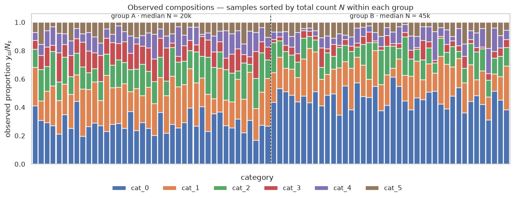
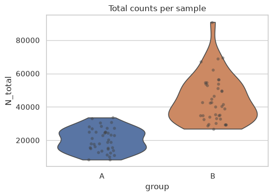
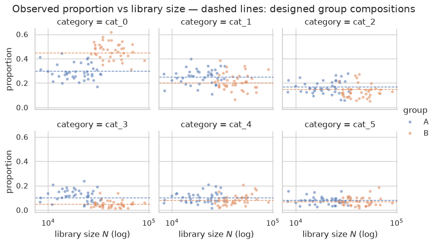
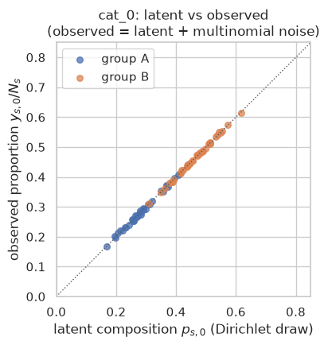
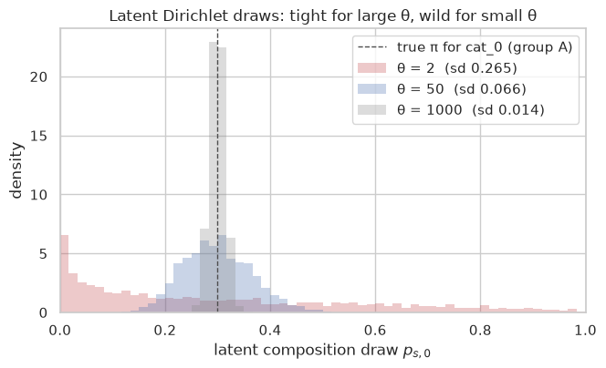

Simulate overdispersed category counts where both the composition and the total count differ across samples, with closed-form checks that the counts really are Dirichlet–multinomial.
Published
October 2, 2026
—title: Simulating counts with a Dirichlet–multinomialdescription: Simulate overdispersed category counts where both the composition and the total count differ across samples, with closed-form checks that the counts really are Dirichlet–multinomial.categories:- Methods & Inferencedate: ’2026-10-02’draft: truecap-location: marginformat: html: code-fold: truejupyter: kernelspec: display_name: Python 3 (main) language: python name: main—This notebook simulates category counts (taxon reads, gene counts, cell types —anything that lives inside a composition) from a Dirichlet–multinomial (DM) hierarchy in which1. the true proportions differ between two groups (a “treatment” effect), and2. the total counts (library sizes) differ between samples — both within groups and between groups (deeper vs shallower sequencing).## Generative modelEvery sample \(s\) from group \(g(s)\) draws\[p_s \sim \operatorname{Dirichlet}(\theta\,\pi_{g(s)}),\qquadN_s \sim \operatorname{LogNormal}(\log m_{g(s)},\,\sigma_{\!N}^2),\qquady_s \sim \operatorname{Multinomial}(N_s,\,p_s).\]| object | role ||—|—|| \(\pi_g\) | expected composition of group \(g\) — deliberately different between groups || \(\theta\) | Dirichlet concentration: how tightly sample compositions cluster around \(\pi_g\). \(\theta\to\infty\) recovers a plain multinomial; small \(\theta\) ⇒ strong overdispersion || \(N_s\) | library size / total count. Lognormal with a different median \(m_g\) per group, plus spread within each group ⇒ total counts differ between samples || \(y_s\) | the observed count vector |## Why the marginal law matters (overdispersion)Integrating the latent \(p_s\) out of the multinomial gives a Dirichlet–multinomial with\(\alpha=\theta\,\pi_g\) and \(\alpha_0=\sum_i\alpha_i=\theta\), for which\[\mathbb{E}[y_{si}]=N_s\,\frac{\alpha_i}{\alpha_0},\qquad\operatorname{Var}(y_{si})=N_s\,\frac{\alpha_i}{\alpha_0}\Bigl(1-\frac{\alpha_i}{\alpha_0}\Bigr)\,\underbrace{\frac{N_s+\theta}{1+\theta}}_{\text{overdispersion factor}},\]\[\operatorname{Cov}(y_{si},y_{sj})=-N_s\,\frac{\alpha_i\alpha_j}{\alpha_0^2}\,\frac{N_s+\theta}{1+\theta}.\]The factor \(\frac{N_s+\theta}{1+\theta}\) equals \(1\) in the multinomial limit (\(\theta\to\infty\)) and\(\approx N_s/\theta\) when \(\theta\ll N_s\) — counts can spread across samples by orders ofmagnitude more than a multinomial predicts. Section 5 verifies these moments by simulation.Roadmap: §1 design → §2 data → §3 group differences → §4 effect of library size →§5 moment check against theory → §6 what \(\theta\) does → §7 export.
Code
import osimport numpy as npimport pandas as pdimport matplotlib.pyplot as pltimport seaborn as snsfrom IPython.display import display%matplotlib inlinesns.set_theme(style="whitegrid", context="notebook")rng = np.random.default_rng(20240614)print("numpy", np.__version__, "| pandas", pd.__version__, "| seaborn", sns.__version__)
deliberately different ⇒ difference in proportions
library sizes
\(N_s\sim\operatorname{LogNormal}(\log m_g,\,0.35^2)\) with \(m_A=20{,}000\), \(m_B=45{,}000\)
different median per group, spread within groups ⇒ difference in total counts
concentration
\(\theta=50\)
moderate overdispersion
With \(\theta=50\), latent compositions drawn from the Dirichlet have per-category sd \(\sqrt{p_i(1-p_i)/(\theta+1)}\) — e.g. \(\approx 0.06\) for a category with \(p_i=0.3\), which is large relative to the \(A\!\to\!B\) shifts (0.10–0.15), so the noise genuinely matters.
Code
# --------------------------------------------------------------- design ----K =6CATEGORIES = [f"cat_{i}"for i inrange(K)]GROUPS = ["A", "B"]PALETTE = {"A": "#4C72B0", "B": "#DD8452"}# Target compositions per group <- the "difference in proportions" knobPI = {"A": np.array([0.30, 0.25, 0.17, 0.10, 0.10, 0.08]),"B": np.array([0.45, 0.20, 0.15, 0.05, 0.08, 0.07]),}# Library sizes (total counts) <- the "difference in total counts" knobsMEDIAN_N = {"A": 20_000, "B": 45_000}SIGMA_N =0.35# log-scale sd: e^0.35 ≈ 1.42x swingsN_SAMPLES = {"A": 40, "B": 40}# Dirichlet concentration <- the overdispersion knobTHETA =50.0def simulate_dirichlet_multinomial(pi_by_group, n_samples_by_group, median_n_by_group, theta=50.0, sigma_n=0.35, rng=None):# One draw per sample:# p_s ~ Dirichlet(theta * pi_g) latent composition# N_s ~ LogNormal(log(median_g), sigma_n) library size (rounded to int)# y_s ~ Multinomial(N_s, p_s) observed category countsif rng isNone: rng = np.random.default_rng() groups, samples, counts, p_draws, lib_sizes = [], [], [], [], []for grp, pi in pi_by_group.items(): pi = np.asarray(pi, dtype=float) med = median_n_by_group[grp]for s inrange(n_samples_by_group[grp]): p = rng.dirichlet(theta * pi) N =int(np.ceil(rng.lognormal(np.log(med), sigma_n))) y = rng.multinomial(N, p) groups.append(grp) samples.append(f"{grp}{s:02d}") counts.append(y) p_draws.append(p) lib_sizes.append(N) n_cat =len(p_draws[0]) counts_df = pd.DataFrame( np.asarray(counts), index=pd.Index(samples, name="sample"), columns=[f"cat_{i}"for i inrange(n_cat)], ) meta_df = pd.DataFrame( {"group": groups, "N_total": lib_sizes}, index=pd.Index(samples, name="sample"), ) p_latent = pd.DataFrame( np.asarray(p_draws), index=pd.Index(samples, name="sample"), columns=[f"latent_p_cat_{i}"for i inrange(n_cat)], )return {"counts": counts_df, "meta": meta_df, "p_latent": p_latent,"pi": dict(pi_by_group), "theta": theta}
Code
# Run the simulation and tidy it up for plottingsim = simulate_dirichlet_multinomial( PI, N_SAMPLES, MEDIAN_N, theta=THETA, sigma_n=SIGMA_N, rng=rng,)counts_df = sim["counts"] # integer counts: samples x categoriesmeta_df = sim["meta"] # group + total count per samplep_latent = sim["p_latent"] # latent per-sample compositions (ground truth)long_df = ( counts_df.reset_index() .melt(id_vars="sample", var_name="category", value_name="count") .merge(meta_df.reset_index(), on="sample"))long_df["proportion"] = long_df["count"] / long_df["N_total"]print(counts_df.shape, "count matrix |", len(meta_df), "samples")long_df.head(8)
(80, 6) count matrix | 80 samples
sample
category
count
group
N_total
proportion
0
A00
cat_0
6067
A
13721
0.442169
1
A01
cat_0
3922
A
14715
0.266531
2
A02
cat_0
4438
A
17618
0.251901
3
A03
cat_0
4750
A
18720
0.253739
4
A04
cat_0
3605
A
15529
0.232146
5
A05
cat_0
4387
A
15553
0.282068
6
A06
cat_0
3433
A
8349
0.411187
7
A07
cat_0
4323
A
18100
0.238840
2. First look
counts_df — one row per sample, one column per category (integer counts).
meta_df — group and total count per sample. Note the wide spread of N_total even within a group, and the higher median in group B.
p_latent — the latent per-sample compositions that generated the counts. The observed proportion \(y_{si}/N_s\) is a noisy estimate of \(\text{latent\_p}_{si}\).
Code
summary = ( meta_df.groupby("group")["N_total"] .agg(count="count", median="median", mean="mean", std="std",min="min", max="max") .round(1))display(summary)print("e^sigma - 1 = {:.0%}: typical multiplicative swing of N in either direction" .format(np.exp(SIGMA_N) -1))
count
median
mean
std
min
max
group
A
40
19536.0
20272.5
6974.7
8349
33573
B
40
41914.5
44552.2
14101.2
26842
90844
e^sigma - 1 = 42%: typical multiplicative swing of N in either direction
Code
# Stacked compositions, samples ordered by group then library sizeorder = meta_df.sort_values(["group", "N_total"]).indexprop_wide = counts_df.loc[order]prop_wide = prop_wide.div(prop_wide.sum(axis=1), axis=0)fig, ax = plt.subplots(figsize=(11.5, 4.4), constrained_layout=True)bottom = np.zeros(len(prop_wide))for cat in CATEGORIES: ax.bar(np.arange(len(prop_wide)), prop_wide[cat].to_numpy(), bottom=bottom, width=0.92, label=cat) bottom += prop_wide[cat].to_numpy()n_a =int((meta_df.loc[order, "group"] =="A").sum())ax.axvline(n_a -0.5, color="k", ls="--", lw=1)ax.text((n_a -1) /2, 1.02, "group A · median N = 20k", ha="center", va="bottom", fontsize=10)ax.text(n_a + (len(prop_wide) - n_a -1) /2, 1.02, "group B · median N = 45k", ha="center", va="bottom", fontsize=10)ax.set(xlim=(-0.6, len(prop_wide) -0.4), ylim=(0, 1.06), xticks=[], ylabel="observed proportion $y_{si}/N_s$", title="Observed compositions — samples sorted by total count $N$ within each group")handles, labels = ax.get_legend_handles_labels()fig.legend(handles, labels, ncol=6, loc="outside lower center", frameon=False, title="category")

3. Group differences
Left: boxplots of observed proportions per category, split by group. The designed shifts (cat_0 up from 0.30 → 0.45; cat_3 down from 0.10 → 0.05) ride on top of the Dirichlet overdispersion. Right: group-mean observed proportions vs the designed truth — averaging many samples recovers \(\pi_g\) almost exactly, because \(\mathbb{E}[y_{si}/N_s]=\mathbb{E}[p_{si}]=\pi_{g,i}\).
# Total counts: different medians across groups + spread within groupsmeta_reset = meta_df.reset_index()fig, ax = plt.subplots(figsize=(5.8, 4.2))sns.violinplot(data=meta_reset, x="group", y="N_total", hue="group", hue_order=GROUPS, palette=PALETTE, inner=None, cut=0, legend=False, ax=ax)sns.stripplot(data=meta_reset, x="group", y="N_total", color="0.25", alpha=0.45, size=4.5, jitter=0.12, ax=ax)ax.set_xlabel("group")ax.set_title("Total counts per sample")fig.tight_layout()

4. Effect of library size on precision
Given the latent composition \(p_s\), the observed proportion has \(\operatorname{Var}(y_{si}/N_s \mid p_s) = p_{si}(1-p_{si})/N_s\): deeper samples estimate their composition more precisely. The facets below show that noise shrinking with \(N\) around the designed group compositions (dashed lines), while the group shift stays in place.
Code
g = sns.relplot( data=long_df, x="N_total", y="proportion", col="category", col_wrap=3, hue="group", hue_order=GROUPS, palette=PALETTE, alpha=0.55, s=18, height=2.4, aspect=1.15,)for ax_, cat inzip(g.axes.flat, CATEGORIES):for grp in GROUPS: ax_.axhline(PI[grp][CATEGORIES.index(cat)], color=PALETTE[grp], ls="--", lw=1, alpha=0.9)g.set(xscale="log", xlabel="library size $N$ (log)")g.figure.suptitle("Observed proportion vs library size — dashed lines: designed group compositions", y=1.02)

Code
# Since we simulated, we can look at the latent truth directly (cat_0):# observed = latent p + multinomial noiseobs0 = long_df[long_df["category"] =="cat_0"].set_index("sample")fig, ax = plt.subplots(figsize=(4.8, 4.5))for grp in GROUPS: idx = obs0.index[obs0["group"] == grp] ax.scatter(p_latent.loc[idx, "latent_p_cat_0"], obs0.loc[idx, "proportion"], s=30, alpha=0.75, color=PALETTE[grp], label=f"group {grp}")lims = (0.0, 0.85)ax.plot(lims, lims, color="0.35", ls=":", lw=1, zorder=1)ax.set(xlim=lims, ylim=lims, aspect="equal", xlabel="latent composition $p_{s,0}$ (Dirichlet draw)", ylabel="observed proportion $y_{s,0}/N_s$", title="cat_0: latent vs observed\n(observed = latent + multinomial noise)")ax.legend(loc="upper left")fig.tight_layout()

5. Sanity check: the marginal is a Dirichlet–multinomial
Freeze the design at group A’s composition \(\pi_A\), fix \(N=1000\) and \(\alpha=\theta\,\pi_A\), and draw 20 000 independent count vectors from the two-step sampler (Dirichlet → multinomial). Their empirical mean / variance / covariance must match the closed-form DM moments from the intro — and their variances must sit far above what a plain multinomial with the same \((N, p)\) would give. With \(M\) Monte-Carlo draws the relative error of an estimated variance is \(\approx\sqrt{2/M}\approx 1\%\), so the “rel. err.” columns should be tiny.
For fixed \(N\), the Dirichlet–multinomial marginal says the observed proportion \(x_i=y_i/N\) has variance \(p_i(1-p_i)\,(N+\theta)\,[N(1+\theta)]^{-1}\). Relative to the plain-multinomial variance \(p_i(1-p_i)/N\), that is a variance-relation factor of \((N+\theta)/(1+\theta)\) — i.e. the sd of observed proportions sits \(\sqrt{(N+\theta)/(1+\theta)}\) above the multinomial sd (a value that grows like \(\sqrt{N/\theta}\) when \(\theta \ll N\) and tends to \(1\) as \(\theta\to\infty\)). The sweep below confirms the sampler matches that curve, and the histogram shows how the latent compositions themselves fan out as \(\theta\) shrinks.
# Latent composition draws for cat_0 under different θfig, ax = plt.subplots(figsize=(6.8, 4.2))for th, col inzip([2.0, THETA, 1000.0], ["#C44E52", "#4C72B0", "0.55"]): p0 = np.array([rng.dirichlet(th * PI["A"])[0] for _ inrange(3000)]) sns.histplot(x=p0, bins=np.linspace(0.0, 1.0, 61), stat="density", color=col, fill=True, alpha=0.30, lw=0, ax=ax, label=f"θ = {th:g} (sd {p0.std():.3f})")ax.axvline(PI["A"][0], color="0.3", ls="--", lw=1, label="true π for cat_0 (group A)")ax.set(xlabel="latent composition draw $p_{s,0}$", ylabel="density", title="Latent Dirichlet draws: tight for large θ, wild for small θ")ax.set_xlim(0, 1)ax.legend()fig.tight_layout()

7. Export
Save the count matrix, the sample metadata, and the latent compositions (the generative ground truth — handy when benchmarking an estimator or a differential abundance test on this data).
Code
counts_df.to_csv("dm_counts.csv")meta_df.reset_index().to_csv("dm_metadata.csv", index=False)p_latent.to_csv("dm_latent_compositions.csv")for name in ["dm_counts.csv", "dm_metadata.csv", "dm_latent_compositions.csv"]:print(f"{name:<32}{os.path.getsize(name):>9,d} bytes")
What was simulated — a Dirichlet–multinomial hierarchy where: * the mean proportions differ between groups (\(\pi_A \ne \pi_B\)), so category-level shifts exist; * total counts differ between samples, lognormally with different group medians (20k vs 45k); * \(\theta\) controls how much each sample’s composition wanders around its group’s \(\pi\).
The simulated moments matched the closed-form DM theory (§5), and the θ sweep (§6) showed the overdispersion factor \((N+\theta)/(1+\theta)\) emerging from the sampler.